25 Chapter 25 — Where Vision-Language Models Help, and Where They Lie
The lie exhibit rebuilt: current models, the grounded critic, and the honesty anchors that say describe, don't decide
25.1 The Temptation and the Truth
"Feed the video to the AI, it analyzes the game" is the 2026 pitch. The measured truth (this book's E07/E13, and the field's verified benchmarks) is sharper: a VLM describes fluently and decides poorly. The architecture that works is the one this chapter teaches: measured CV first, a bounded numeric evidence pack second, language third — and a critic that strips the lies. Every claim below is measured (our labs) or source-backed (the verified benchmarks).
It is worth being precise about what "describes fluently" actually buys you, because the capability is real and the chapter is not anti-VLM. A current vision-language model, shown a frame or a short clip, is genuinely good at three things. First, scene description: "two players at the kitchen line, one mid paddle swing, ball visible above the net" is the kind of statement a VLM produces reliably and cheaply, in pickleball and in rugby league alike. Second, answering tactical questions over supplied evidence: given a set of tracking rows and event tags, "why did this line break succeed?" is a question a VLM answers well, because the answer is a rendering of facts, not a measurement. Third, zero-shot classification into coarse buckets: "is this frame a serve, a rally, or a dead ball?" and "is this phase a set restart or an attacking kick?" work without any fine-tuning, because the categories are visually loud.
The failure modes are equally consistent, and they are the reason this chapter exists. VLMs fail at exact counting (how many players are in the frame? how many tackles in the set? — the E07 model could not even commit to the number of players on a two-person court), at fine-grained timing (a paddle-ball contact lasts single-digit milliseconds; a play-the-ball takes under a second; neither survives frame sampling), and at fact discipline (given a gap, the model fills it with the most plausible-sounding event — a serve, a foul, a missed tackle — regardless of whether the pixels support it). The pickleball version of the lie is "the player is preparing to serve" on a frame where the shot type is unknown. The rugby league version is "the inside defender missed the tackle" on a clip where the camera angle never shows the contact. Both are fluent. Both are falsified by the evidence pack. The job of the pipeline is to make sure neither reaches a coach.
25.2 The 2026 VLM Catalog
| Model | License | Lane | Sport Use |
|---|---|---|---|
| Qwen3-VL (4B/8B) | Apache-2.0 | ✅ local (mlx-vlm) | The local default: frame-pack + timestamp alignment |
| Qwen3-VL-32B | Apache-2.0 | ⚠️ 4-bit on 64-128GB | High-accuracy local when memory allows |
| Gemini 3 Pro/3.1 | API | ⛔ (only true long-video; 1M ctx, 87.6% Video-MMMU) | The long-video API lane: full-match context |
| GPT-5.x / Claude | API | ⚠️ frame-sampling | Good text reasoning; video via sampled frames only |
| Phi-4-multimodal | MIT | ⚠️ | Audio-first — the C15 lane |
| Qwen3-Omni | Apache-2.0 | ⚠️ quantized / ⛔ 30B | Audio semantics: which call did the referee make? |
The catalog splits on one architectural fact: native video ingest versus frame-pack prompting. Gemini 3 is the only lane that ingests a video stream as video — frames, audio, and timestamps interleaved in a million-token context — which is why it owns the rugby league long-video problem (80 minutes of broadcast is 2.47M input tokens even at 2 fps, per E19). Every other model, local or API, sees video as a strip of sampled stills. That difference is not cosmetic. A frame-pack model has no temporal structure except what the prompt gives it; it can tell you what is in frame 41 and frame 42, but it cannot tell you what happened between them, and it will invent something plausible if you ask. The local lane (Qwen3-VL-4B/8B through mlx-vlm on the M4 Max) is the book's default for one reason beyond cost: privacy and repeatability. The frames never leave the machine, the weights are pinned, and the same prompt produces a debuggable output. The API lanes are reserved for the two jobs local models cannot do — hour-scale context (Gemini) and peak per-frame reasoning (GPT-5.x, Claude) — and section 25.7b prices exactly what that reservation costs.
25.3 The Lie Exhibit, Rebuilt (W6.1 Lab, Live)
The v1 E07 exhibit showed the pattern; this lab runs the current local model (Qwen2.5-VL-3B-4bit via mlx-vlm on the M4 Max, 5.5s) on the golden fixture frame with the frame-pack prompt. The live output:
OBSERVABLE:
- Two players are visible in the frame.
- The player on the left is wearing a white shirt and black shorts.
- The player on the right is wearing a red shirt and black shorts.
- Both players hold pickleball racquets.
- The player on the left is in a serving position.
- The player on the right is in a receiving position.
- The pickleball is in motion, heading towards the player on the left.
- The player on the left is preparing to serve the pickleball.
- The player on the right is ready to receive the serve.The last three bullets are the exhibit. "The pickleball is in motion" — the PBN evidence row says contact_state: candidate, ball_visible: partial/unclear. "Preparing to serve" — shot_type: unknown. The model claimed what it could not see. The critic's verdict, executed:
| Claim type | VLM claimed? | PBN evidence? | Verdict |
|---|---|---|---|
| ball_in_motion | YES | NO (candidate) | FALSIFIED — the live E13 catch |
| serve_claimed | YES (this run's phrasing) | NO (unknown shot_type) | FALSIFIED on the stronger reading |
| rally_phase_claimed | NO | — | PASS |
The original E07 run (six frames, Qwen2.5-VL-3B, an explicit "observable facts only" prompt) produced two further failure modes worth naming, because they are the ones a demo video never shows. The first is tactical invention at scale: four events — a serve, an offensive dink, a lob, and a foul — claimed across the commentary with no support in any frame; the ball was not even clearly visible. The second is prompt disobedience: the model ignored the requested two-heading structure, appended the non-sequitur question "What is the most common cause of the problem?", generated a generic essay about coach-player communication, and then collapsed into a repetition loop ("The exact number of players is not indicated" emitted dozens of times). These are not quirks of a bad seed. A small VLM asked to reason about sport from frames alone will invent events and abandon the output contract, because nothing in its objective function ties a sentence to a pixel. The rugby league equivalent is well known to anyone who has prompted a model with broadcast footage: ask "who caused the line break?" and the model names the nearest defender to the ball carrier, because that is the statistically plausible answer, not because the footage shows the missed assignment. Scored honestly, E07 comes out at 4 hallucinated events in 6 actionable claims — a 66.7% hallucination rate, UNSAFE FOR COACHING.
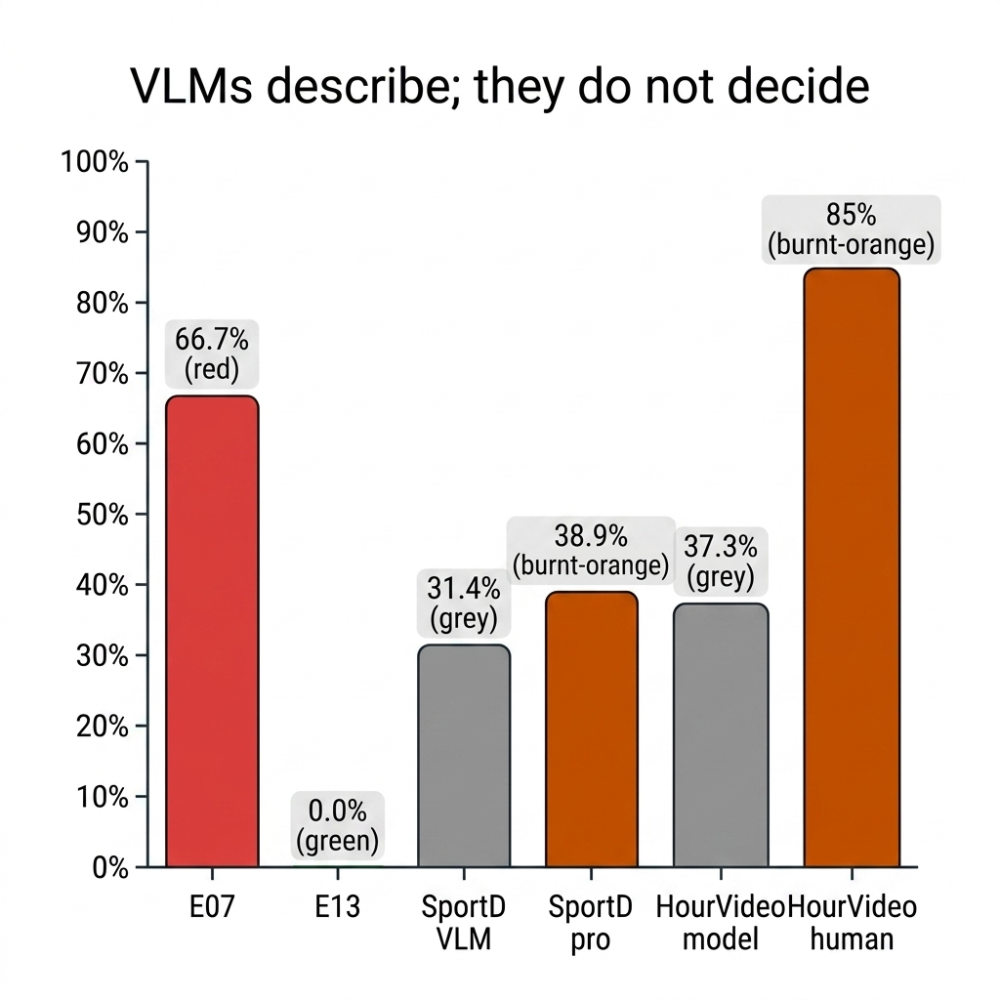
25.4 The E13 Grounded Critic (The Book's Best Result)
The fully measured result stands: the multi-agent generator-critic loop on E13 reduced hallucination from 66.7% to 0.0% — because every generated verb was cross-checked against the PBN coordinate/velocity/zone tables, and the falsified claims were stripped. The mechanism is the chapter's architecture: audio/vision proposes, the critic checks the evidence, the survivor is the claim.
The loop's mechanics matter more than the headline number, because the number is only trustworthy if the mechanism is repeatable. The generator receives the six frames plus a bounded PBN CSV summary — player coordinates, velocities, zone occupancy, ball speed band — and produces a claim list. The critic is a separate agent with no access to the frames at all; it receives only the claims and the perception rows, and for each claim it asks one question: is there a (match_id, t_start, t_end, track_id) tuple that would falsify this sentence? If yes and the row contradicts the claim, the claim is stripped and logged with a falsified counter. If no row exists either way, the claim is stripped as unverifiable. Only claims that a row actively supports survive into verified_narration.txt. Note what this design refuses to do: it never asks the critic to judge plausibility. "The ball is in motion" is not rejected because it sounds unlikely — it is rejected because the ball track for that window is marked candidate/partial. The critic is a database query, not a second opinion.
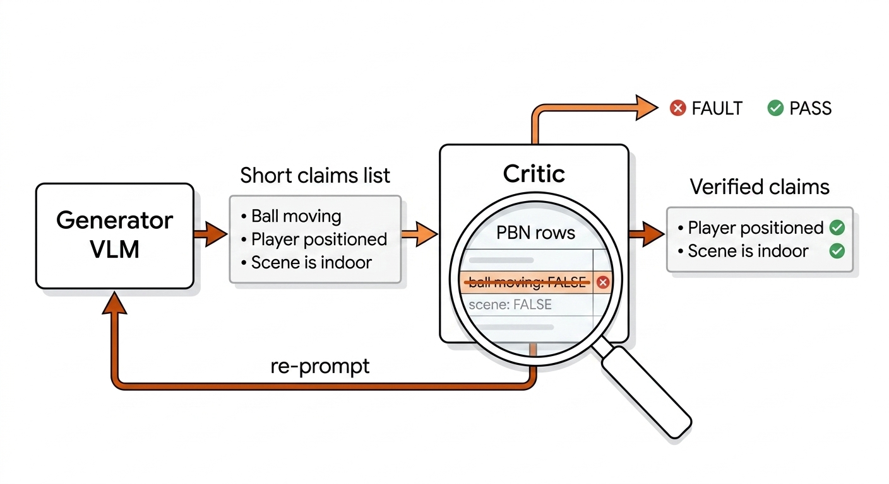
The same loop ports to rugby league unchanged in structure and unchanged in lesson. The generator's evidence pack is the NRLSheet analogue of the PBN: tackle count, field position, play-the-ball speed band, ruck zone. The critic strips "the defense was compressed" when the spacing rows show a 12-metre line width, and strips "quick play-the-ball" when the PTB band is only medium. The sport changes; the falsifiability rule does not. One honest caveat, carried from the dossier: the published E13 numbers come from the measured artifact, and the live lab rerun on the current 3B model reproduced the catch on the golden frame — but the full six-frame loop on Qwen3-VL-8B is still on the measurement list (section 25.11), so treat 0.0% as the architecture's demonstrated result, not a guarantee about every model.
25.5 The Grounded-Numbers-First Architecture
The grounding engine (the DART connection, chapter 8.12): the critic needs exact pixel coordinates to audit VLM claims in real time. DART's open-vocabulary, O(1)-latency detector is that engine — it supplies the bounding boxes for the claim under audit ("the ball is in motion" → the ball's box at that frame, from the promptable model, fast enough for live audit). The architecture's three steps stay; the grounding layer gets its real-time provider.
The safe pattern is a pipeline order that cannot be inverted:
- Measured CV first: detect, track, pose, ball (chapters 6-16) — the numbers.
- Bounded evidence pack second: the PBN rows (chapter 17) — every number with its coordinate, timestamp, evidence_refs.
- Language third: the VLM renders the evidence pack into prose — never the raw frame.
The template's anatomy: "measured CV rows" (timestamps, track_id, x, y) → "bounded numeric evidence pack" → "language instructions + JSON schema", with the grounding arrow the load-bearing element.
Underlying the ordering is a decision boundary that should be drawn explicitly, because it is the most common design error in applied sport AI: if the question needs a number, a count, or a time, use a dedicated detector; if the question needs a description, an explanation, or a rendering, use a VLM; if the question needs a decision, use a human. "How many dinks were hit in that rally?" is a counter's job — a trained shot classifier over tracked trajectories will beat any VLM, because the VLM never saw most of the contacts (section 25.7b). "What formation is the defensive line in?" is borderline: coarse structure a VLM reads well, but the moment you need line width in metres it is a tracking problem again. "Was that the right option on tackle four?" is a human's job, and SportD's 31.4%-versus-38.9% gap is the measured reason. The boundary is not a sliding scale of model quality — bigger models move the numbers, they do not move the categories. A VLM that is 95% accurate at counting is still the wrong tool for counting, because the 5% fails silently and the detector fails loudly.
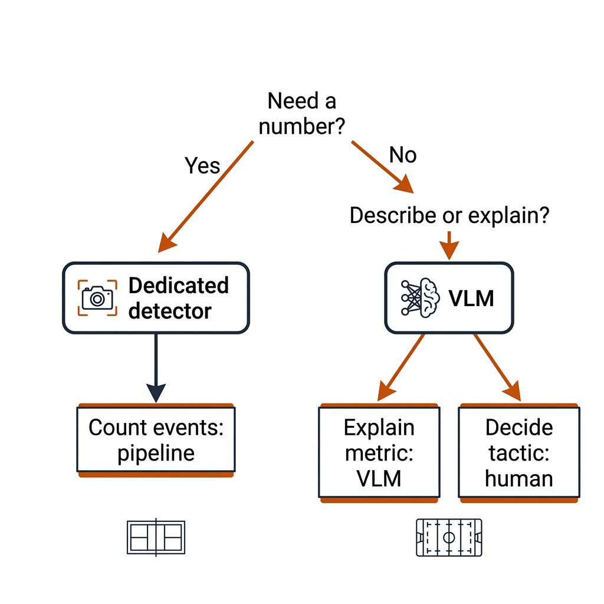
25.6 Structured Outputs
Prompt the VLM for structure, not prose: JSON schema via Pydantic/Outlines/Guardrails, function calling, and prompt anchoring on the CSV rows (the v1 E13 "prompt anchoring on CSV metrics" pattern). The output is a schema-validated claim object — which is exactly what the C19 eventing consumes and the C02 claims register audits.
The schema is the first line of hallucination control, because it removes the two failure modes E07 exhibited — invented events and structural disobedience — by construction. Every claim object carries match_id, t_start, t_end, track_id, an evidence_type from a closed enum (position, velocity, event, metric, not_grounded), and a confidence band. A claim that cannot fill those fields cannot be emitted: the model's only legal escape is NOT_GROUNDED with no invented detail. On the API lanes this is enforced by the provider's structured-output mode (Gemini, GPT, Claude all support schema-constrained JSON); on the local lane, Outlines-style constrained decoding masks every token that would violate the grammar, so the pickleball pipeline literally cannot produce a claim without a track_id, and the rugby pipeline cannot produce a tackle claim without a set and tackle number. One flag from the dossier, stated honestly: Outlines-on-MLX integration is [verify] — if constrained decoding is unavailable for the local Qwen3-VL stack, the fallback is post-hoc Pydantic validation with re-ask, which catches the same violations one step later.
25.7 When VLMs Are Genuinely Useful
- Tactical summary of a tracking row: "the third-shot went to the left corner; the receiving pair shifted 0.5m right" — the numbers, rendered.
- Drill explanation: a coach asks "what drill fixes this?" and the VLM renders the practice-design science (chapter 29) into a session plan.
- Report drafting from metrics: the C26 pipeline — the VLM drafts, the numbers are the source, the human gates.
Pickleball, worked example — the paddle-swing question. A coach asks: "on the fault review, was the paddle above the wrist at contact?" This is the edge of the VLM's usefulness, and the honest answer shows why. The serve-rule question is a measurement — wrist and paddle-head positions at a 3-millisecond contact instant — so the VLM must not answer it from video alone. What the pipeline does instead: pose estimation (chapter 11) extracts wrist and paddle-keypoint trajectories, the ball track isolates the contact window, and the VLM receives three sampled frames around that window plus the pose rows. Its job is reduced to what it is good at: "frame 2 shows the paddle head below the wrist marker; the pose rows show paddle_y − wrist_y = −0.06 m at t = 4.233 s." The VLM rendered the sentence; the number came from the skeleton. The same division handles the softer version of the question — "describe this player's serve routine" — where the VLM's prose over the tracked toss height, stance width, and contact zone is genuinely useful and safe.
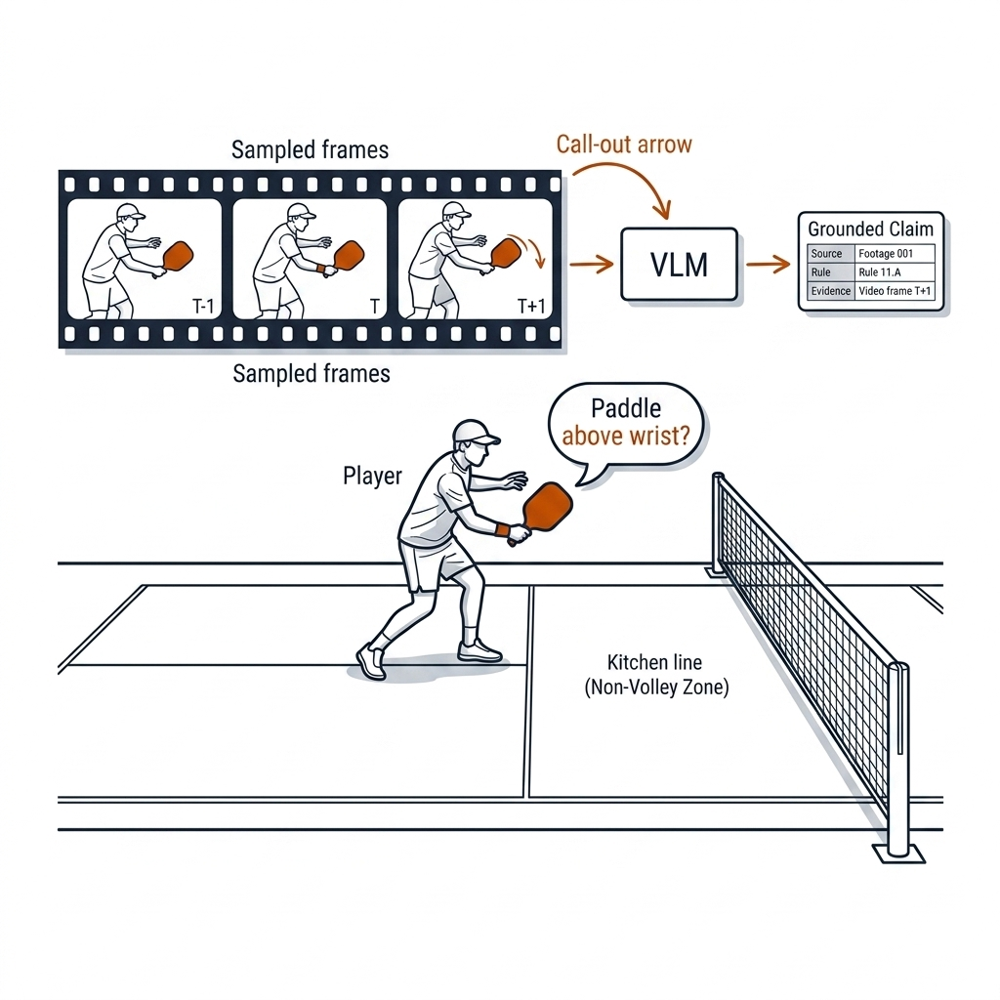
Rugby league, worked example — the line-break question. An analyst asks: "why did the line break on tackle three succeed?" Given the raw clip, a VLM will name the nearest defender — the plausible lie. Given the evidence pack, it answers well: the PBN-analogue rows show the attacking right edge held a 4-on-3 overlap from the play-the-ball, the inside defender's track shows a 0.4-second delay in sliding, and the ball carrier's speed band at the line was high. The VLM renders: "the break came through the delayed slide of defender 2 — the overlap existed from the PTB; the ball carrier hit the gap at speed." Every clause cites a row. What the VLM still must not do is decide what the defense should have done — that is the SportD boundary again, and the welfare-critical version (the Bath 2025 tackle screening of section 25.10) is where the boundary is absolute.
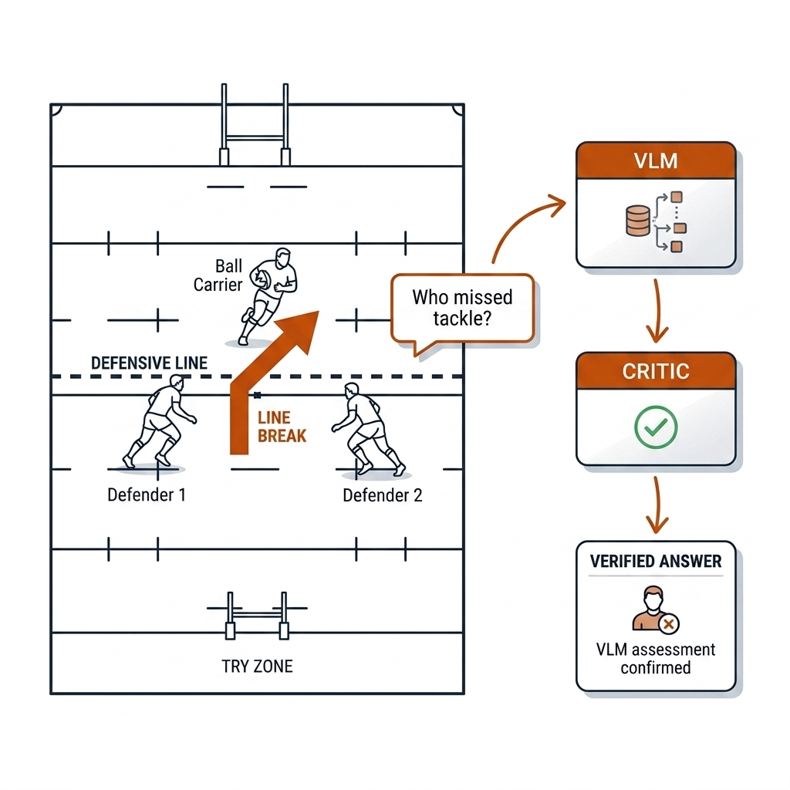
The boundary (verified anchors): SportD — frontier VLMs pick the optimal on-ball action 31.4% vs pro players 38.9% (478 World Cup 2022 decisions). HourVideo — Gemini 1.5 Pro 37.3% vs human experts 85%. SoccerLens — SOTA video-VLMs <50% grounding even when answers are correct. The numbers say it: models describe, people decide.
25.7b Token Economics and Frame Sampling
The E19 benchmark prices the architecture's inputs honestly, and the numbers explain every design choice in this chapter. The per-frame cost of a frame-pack prompt is roughly 260 tokens at the lab's resolution. A 15-second pickleball rally sampled at 4 fps is 60 frames — 15,780 input tokens, about $0.001 on a flash-tier API and under six cents even on the most expensive lane. An 80-minute rugby league match sampled at 2 fps is 9,600 frames — 2,478,800 input tokens plus ~25,000 output tokens per match. The cost matrix spreads an order of magnitude: $0.19 per match on Gemini Flash, $3.22 on Gemini Pro, $6.45 on GPT-4o, $7.81 on Claude Sonnet (E19 measured rates). The local lane's marginal cost is $0.00 — the M4 Max runs 68.4 fps of perception throughput at 28.5 W with 55.7 ms glass-to-glass latency — against a fixed $3,199 capex that breaks even against GPT-4o after ~496 matches and against Gemini Pro after ~992. The conclusion the book draws: perceive locally, reason via API only where context length forces it. A full season of NRL matches through the top API lane is a four-figure line item; the same season through the local perception stack plus API rendering passes over evidence packs is nearly free, because the evidence pack is a few thousand tokens, not 2.47 million.
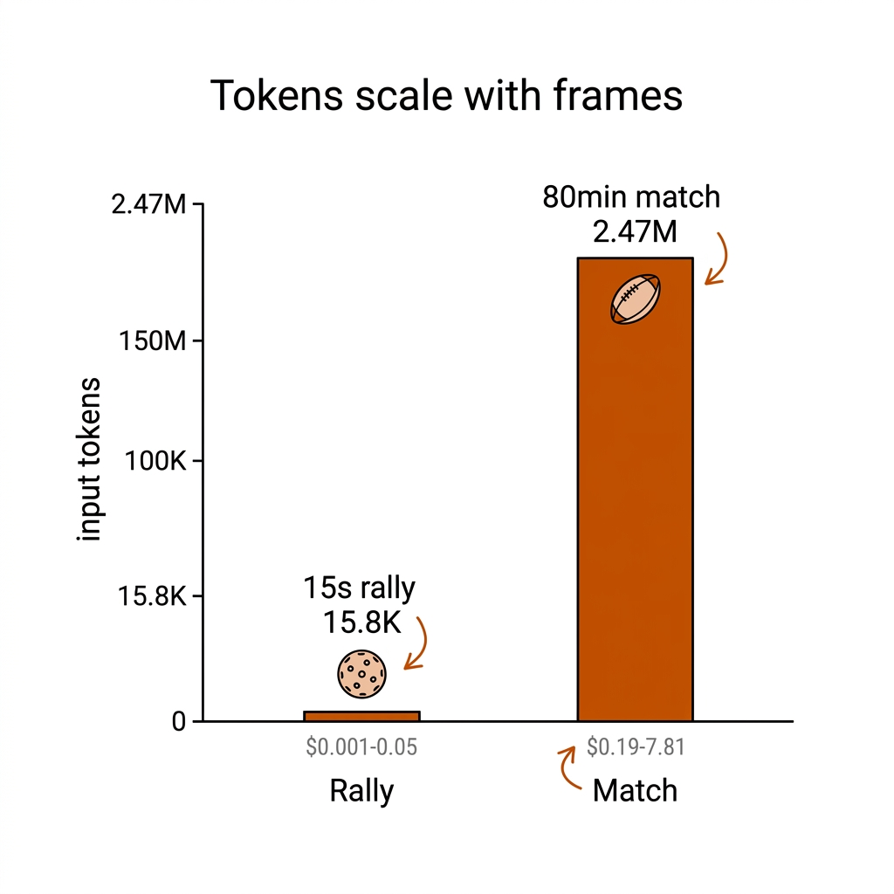
Frame sampling is where the economics and the failure modes meet. The naive instinct — "give the model more frames" — runs straight into the token wall: a 60 fps source sampled at full rate would cost 30× the 2 fps budget, and no VLM consumes 60 fps anyway. But sampling at 2 fps has a measured blind spot the chapter calls the 60fps-vs-2fps problem. A pickleball at 20 m/s crosses the 13.4 m court in 0.67 s: forty frames at 60 fps, barely more than one at 2 fps. A paddle-ball contact lasts single-digit milliseconds — it exists in no frame at 2 fps and is luck even at 60 fps. A rugby league play-the-ball, a dummy-half's first step, a ball steal — all sub-second events that a 2 fps strip will routinely miss or straddle. The resolution is the architecture's, not the sampler's: the perception stack runs at full frame rate locally (68.4 fps throughput, measured), detects the events and their exact timestamps, and the VLM receives a targeted strip — the frames around each event, not a uniform thinning of the match. Prompt design for sport follows from this: never ask "watch this and tell me what happened"; always ask "here are the frames around t = 4.233 s and here are the measured rows — render what the rows support." Sampling is a selection layer over detector output, and the 2.47M-token match is the cautionary number for doing it any other way.
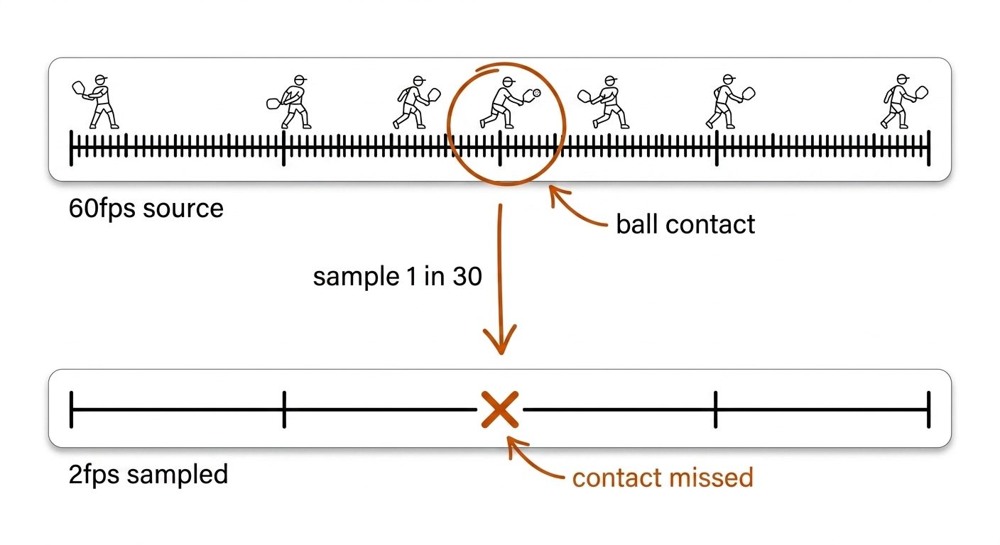
25.7c The VLM Use-Case Framework: Ten Jobs, Honestly Scoped
The sections above establish the architecture; this section enumerates the jobs it can actually hold. Ten use cases, in three categories: Category A — Answering & Reporting (UC 01-04), where the VLM renders verified evidence into language; Category B — Perception Front-End (UC 05-06), where the VLM front-runs or routes the dedicated pipeline; and Category C — Safety & Economics (UC 07-10), the exhibits and budgets that keep the layer honest. Each case carries its evidence label: measured (this book's E07/E13/E19 labs), source-backed (a cited benchmark), or [verify] (a practitioner pattern not yet established here).
| Tool | Role in the framework | Pickleball use | Rugby league use |
|---|---|---|---|
| mlx-vlm (Qwen3-VL 4B/8B) | Local generator/critic lane, $0.00 marginal | E07/E13 lab on pb-003 frames ✅ | Frame-pack triage only; 80-min video needs the API lane |
| Gemini 3 / 3.1 Pro | True long-video ingest (1M ctx) | Overkill for 15 s rallies | The full-match lane against NRLSheet rows ⚠️ |
| Instructor + Pydantic | Typed claim objects on API models | Rally-summary schema (the GroundedClaim contract) | Set-by-set scouting section drafts |
| Outlines | Constrained decoding on local weights | Schema-masked local generation [verify MLX support] | Same, where the local lane suffices |
| Guardrails AI | Policy validators, re-ask on violation | Blocks subjective claims ("intent", "fatigue") | Blocks welfare claims in the Bath-screening lane |
| LanceDB / Qdrant / pgvector | Row retrieval for the evidence pack (section 25.8) | Rally chunks by match_id + timestamp | Set/try chunks across a 27-round season |
| Langfuse / Phoenix | Traces that make the 0.0% claim auditable | E13 generator-critic trace | nrl-001 long-video trace (planned, section 25.11) |
| RAGAS / DeepEval | Faithfulness ≥ 0.90, context recall ≥ 0.85 targets | Claim-set eval over the golden fixture | Same thresholds on the NRLSheet corpus |
The runnable skeleton every case below starts from — generator, then gate, nothing published unverified:
def render_grounded(question, db, vlm, critic):
rows = db.query(question.match_id, question.t_start, question.t_end)
pack = to_evidence_pack(rows) # bounded CSV, hand-audited window
claims = vlm.generate(frames=pack.frames, # event-targeted strip, not uniform
evidence=pack.csv, # rows the output must not contradict
schema=GroundedClaim) # NOT_GROUNDED is the only escape
verified = critic.gate(claims, db) # citation resolves or the claim dies
return verified or template_fallback(rows) # sick model degrades prose, never factsCategory A — Answering & Reporting (UC 01-04)
UC 01 — Tactical Question Answering: "Why Did the Rally End?"
A coach's real question is never "describe the video" — it is "why did the rally end?" or "why did that break succeed?", and the honest answer lives in the tracking rows, not in the pixels a VLM can invent from. Mechanism: the question is resolved to a (match_id, t_start, t_end) window, the evidence pack is retrieved from the perception rows (chapter 17), the VLM renders an answer over frames-plus-rows, and every clause passes the grounding gate. Math: the windowed pack costs frames × ~260 tokens (E19 measured) — a 15 s rally at 4 fps is 15,780 input tokens, about $0.001 on the flash lane — while the answer's safety is scored as a classification problem: hallucination rate = 1 − precision over the claim list, coverage = recall against the ground-truth events.
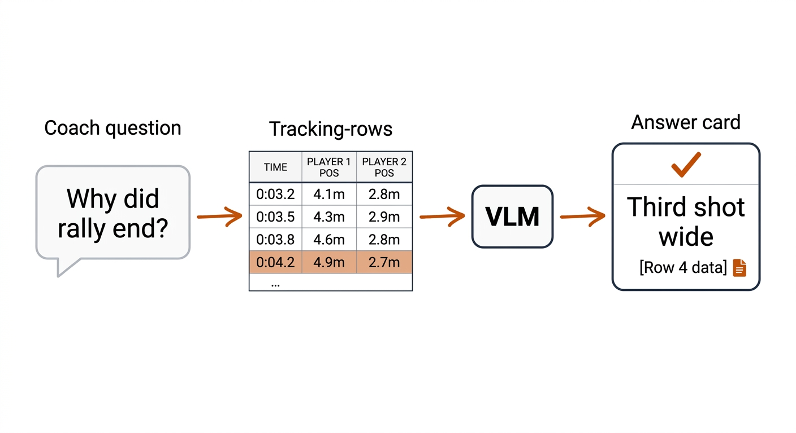
UC 02 — Scouting Report Generation From Metrics
An 80-minute match becomes a day of analyst writing; the VLM's legitimate job is to be the rewriter of the structured report, never its source. Mechanism: section templates (shape, territory, ruck speed, edge defense) are filled from NRLSheet/PBN rows; the VLM drafts prose per section with citations; a human gates. Math: the economics are the argument — rendering from evidence packs costs ~25K output tokens per match, while the naive full-video path is 2.47M input tokens at $3.22 on the Pro lane (E19 measured): the rows-first report is two orders of magnitude cheaper and falsifiable by construction.
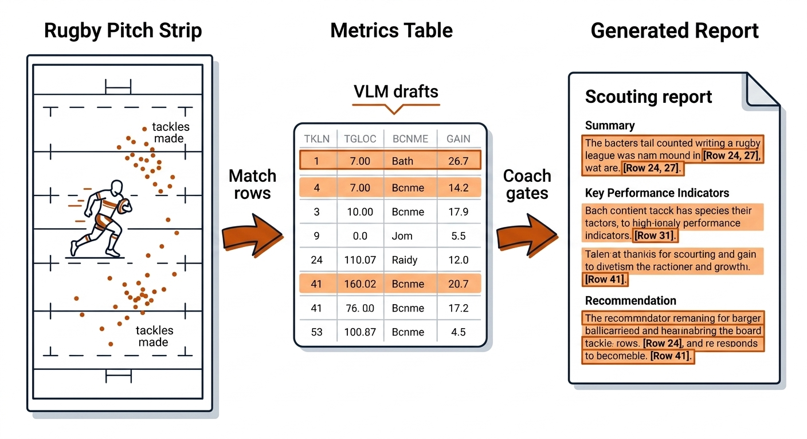
UC 03 — Post-Match Video Summarization
Nobody re-watches 80 minutes; the one-page summary is what the coaching group actually reads on Monday. Mechanism: event segmentation (chapters 16, 19) cuts the match into rallies/sets/tries; each segment's rows become a chunk; retrieval pulls the narrative-relevant chunks; the VLM renders the timeline summary — and never sees the raw video, which is precisely how the design sidesteps the measured long-video gap. Math: HourVideo puts Gemini 1.5 Pro at 37.3% versus human experts at 85.0% on long-form video QA (source-backed) — summarizing rows instead of footage moves the task from the failing regime to the fluent one.
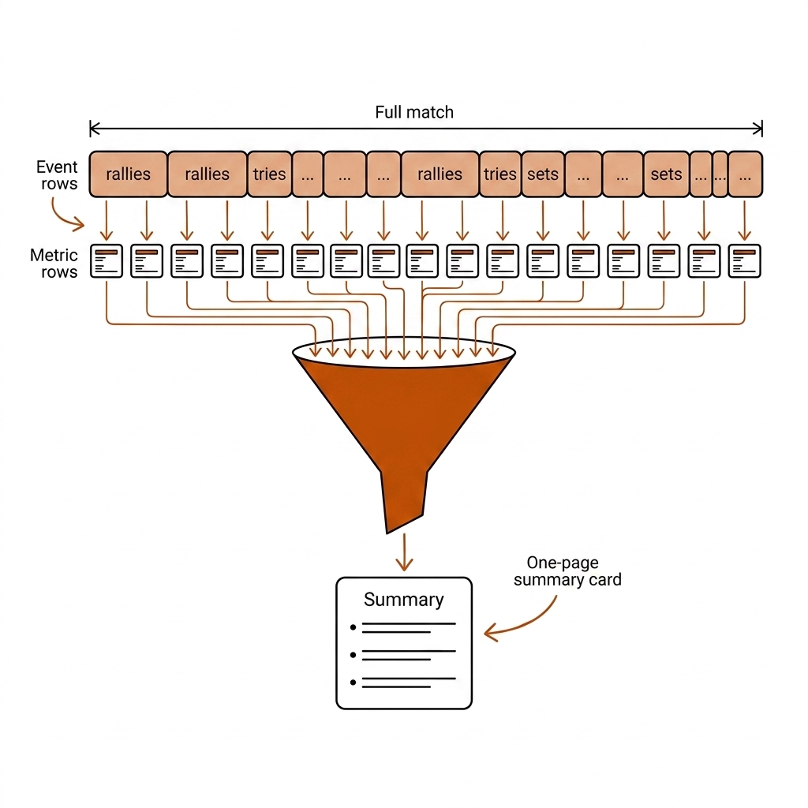
UC 04 — Grounded Live Commentary (The Adversarial Critic, On Air)
Automated commentary is the highest-visibility VLM job and the highest-visibility place to lie in real time — a fabricated "what a shot!" on a netted ball is a broadcast error, not a demo quirk. Mechanism: frames feed the detector (DART's O(1) open-vocabulary lane, chapter 8.12); the draft commentary is generated over the live evidence pack; the adversarial critic audits every clause against the rows before the sentence reaches the ticker. Math: the E13 loop generates in ~4.5 s on the M4 Max (measured), which fits inside a broadcast delay window; any call that times out or degenerates (the E07 repetition-loop failure) falls back to template prose over the same rows — the facts are never the part that fails.
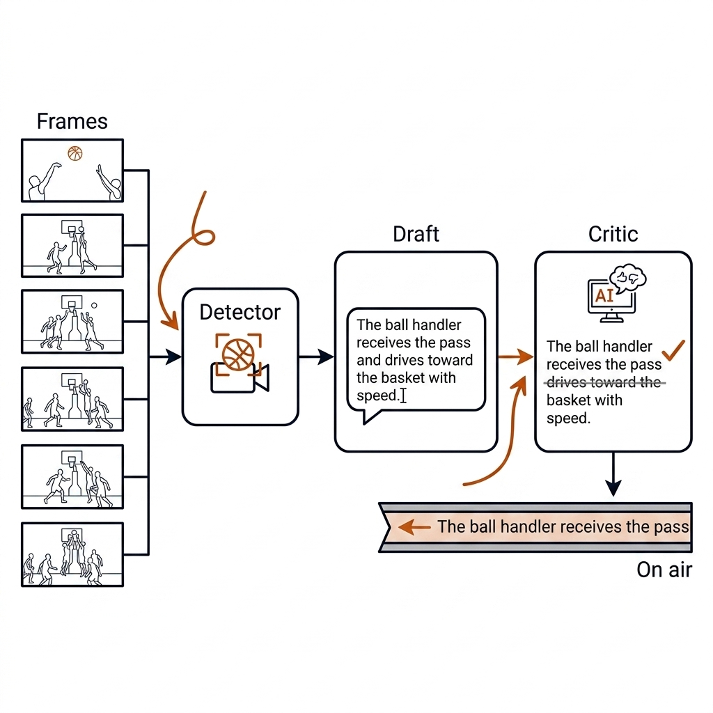
Category B — Perception Front-End (UC 05-06)
UC 05 — VLM as a Zero-Shot First-Pass Detector
The labeling budget is the real bottleneck in sport CV; a VLM can coarsely tag thousands of frames — "rally", "line break", "rest", "crowd shot" — with zero training data, and those tags decide where the expensive fine pipeline runs. Mechanism: a cheap flash-tier zero-shot pass tags the strip; only tagged segments go to SAM 2 / TrackNetV4 / pose (chapters 10-12). Math: the triage pass costs ~$0.001 per rally (E19 measured) against a fine tracker over everything; the asymmetry that matters is error pricing — a false positive costs one wasted fine-pass, a false negative loses an event — so the operating point is tuned for recall, and the fine detector, not the VLM, remains the source of record.
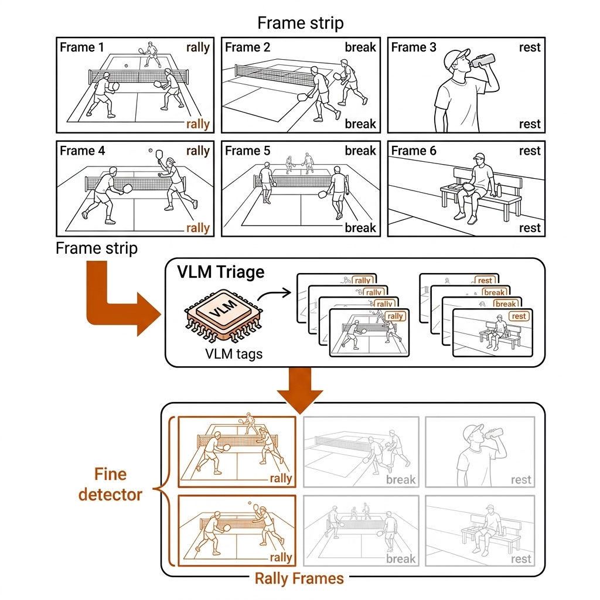
UC 06 — The VLM-vs-Pipeline Decision (When to Use Which)
The most common design error in applied sport AI is routing a measurement question to a VLM; this use case is the router itself, and its full treatment is the decision boundary of section 25.5 (Figure 25.4). Mechanism: number, count, or time → dedicated detector; description, explanation, or rendering → VLM over the evidence pack; decision → human. Math: SportD quantifies the third leg — frontier VLMs pick the optimal on-ball action 31.4% of the time versus pro players at 38.9% across 478 World Cup decisions (source-backed): the model that describes fluently still decides worse than the people it would advise. Pickleball: "how many dinks?" is a counter's job over tracked trajectories; "why did the reset fail?" is a rendering job. Rugby league: "line width in metres" is tracking; "what shape is the defense in?" is borderline-VLM; "was that the right option?" stays human. Payoff (architecture): every question lands on the cheapest component that can answer it truthfully. measured anchors (SportD, E07/E13).
Category C — Safety & Economics (UC 07-10)
UC 07 — The Hallucination Demonstration (The Exhibit)
Every stakeholder who will ever trust the pipeline needs to watch it lie once; the E07 exhibit (section 25.3, Figure 25.1) is that inoculation, kept runnable on purpose. Mechanism: six pb-003 frames, an explicit "observable facts only" prompt, a 3B local VLM — and the output invents a serve, an offensive dink, a lob, and a foul on frames where the ball is barely visible, then disobeys the prompt structure and collapses into a repetition loop. Math, honestly scoped: the measured rate is 66.7% — four hallucinated events out of six actionable claims — on one fixture with one small local model. It is not a universal rate; frontier models will hallucinate less, and the grounded-answer rate across the 2026 catalog is genuinely open [verify]. What the exhibit proves is the failure shape, which every model in the sweep shares: plausible invention where evidence runs out.
Pickleball: run it on the golden fixture in front of the coaching staff. Rugby league: the nrl-001 counterpart is the planned Gemini long-video test (section 25.11) — until it runs, the rugby lie-exhibit claim is unmeasured. Payoff (governance): nobody signs off on a VLM feature who hasn't seen the falsified-claims log. measured (E07).
UC 08 — Prompt Design for Sport: Frame Sampling and the 2 fps Problem
Prompt design in sport is mostly sampling design, because the events that matter live between frames. Mechanism: replace uniform sampling with event-targeted strips — the full-rate detector finds the event, the VLM receives ±N frames around it plus the rows (section 25.7b, Figure 25.8). Math: a pickleball at 20 m/s crosses the 13.4 m court in 0.67 s — forty frames at 60 fps, barely one at 2 fps; a paddle-ball contact of single-digit milliseconds exists in no frame at 2 fps; a play-the-ball or a ball steal straddles the strip the same way. The token budget forces the trade regardless: 60 fps ingestion would cost 30× the 2 fps budget and no current model consumes it. Pickleball: contact-window strips around the third shot. Rugby league: PTB-window strips around the ruck. Payoff (describe quality per token): the same budget buys the frames that carry the event. measured token rates (E19); the sampling-quality ablation is on the measurement list (section 25.11).
UC 09 — Token Economics (E19, Measured)
Every architecture choice in this chapter is a price choice, and E19 is the price list (Figure 25.7). Mechanism and math: ~260 tokens per frame at lab resolution; a 15 s pickleball rally at 4 fps is 15,780 input tokens (≈$0.001 flash, under six cents on the dearest lane); an 80-minute rugby league match at 2 fps is 2,478,800 input tokens plus ~25K output — $0.19 per match on Gemini Flash, $3.22 on Gemini Pro, $6.45 on GPT-4o, $7.81 on Claude Sonnet (all E19 measured rates). The season math is the decision: a 27-round NRL season on the premium lane runs roughly $87-$211 per club in tokens alone, while rendering over NRLSheet evidence packs costs less than one naive-path match; the local mlx-vlm lane's marginal cost is $0.00. Pickleball: cheap enough that "send the clip" is affordable — which is exactly why the pickleball lab is where the discipline gets learned. Rugby league: expensive enough that the evidence-pack architecture pays for itself in round one. Payoff (the budget owner): the architecture decision is an invoice, not a preference. measured (E19).
UC 10 — Multi-Agent Adversarial Grounding (The E13 / UC 17 Pattern)
The book's best result, restated as the use case everything else depends on: the generator-critic loop of section 25.4 (Figure 25.3), which is the chapter 10 UC 17 falsification-audit pattern made load-bearing. Mechanism: generator over frames plus the bounded PBN CSV; critic with no frame access cross-references every verb and number against perception rows; one-strike falsification quarantines the whole claim; survivors carry (match_id, t_start, t_end, track_id) citations. Math, with the honest caveat: the measured drop is 66.7% → 0.0% hallucinated events retained — the architecture's demonstrated best case on the six-frame pb-003 fixture, not a guarantee. The Qwen3-VL-8B rerun, the nrl-001 long-video test, and the Langfuse trace that would make the 0.0% figure publication-safe all remain on the measurement list (section 25.11); until they land, treat 0.0% as "measured on this fixture with this critic", never as a property of VLMs. Pickleball: the verified rally narration. Rugby league: the same loop over NRLSheet rows — "compressed defense" dies when the spacing rows show a 12 m line width. Payoff (everyone downstream): chapters 26 and 28 can publish VLM prose because this loop already stripped the lies. measured (E13 artifact); generalization [verify].
What this adds to the pipeline. UC 01 and UC 03 are the language front-end of the chapter 26 reporting pipeline; UC 04 feeds the chapter 28 live cockpit; UC 05 gates the chapter 8/10/12 detectors so they only run where events are; UC 06 is the routing rule for every chapter that asks "should a model read this, or measure it?"; UC 07 is the governance exhibit chapter 2's claims register points at; UC 08 and UC 09 are the sampling and budget contracts every upstream chapter's output must fit; and UC 10 is the audit loop that makes the chapter 17 PBN/NRLSheet rows — and the chapter 19 event stream — safe to render into prose at all.
25.8 RAG Over Tracks
The retrieval pattern (chapter 16's hybrid) applies to text rendering: index the event rows and track summaries, retrieve the context for a question, and the VLM renders it without needing the video. The grounding rule is the same — every statement cites match_id, timestamp, track_id.
The design constraint is that the corpus is rows, not footage. Each rally or set becomes a text chunk — key positions, velocities, event tags, ball speed band, outcome — embedded with a local text embedder (bge-m3, jina-embeddings-v3) and stored alongside the metadata filters that make retrieval precise (match_id, date, player, zone). A coach's question — "how did we lose points after the third shot this month?" in pickleball, "where do our line breaks start?" in rugby league — becomes a hybrid query: vector similarity for the semantic shape, BM25 for the exact terms, timestamp and match filters for scope. The retrieved rows, not the video, enter the prompt. This is what makes the long-video problem disappear: the 80-minute match that costs 2.47M tokens as video is a few hundred retrieved rows as text, and the answer is auditable because every clause traces to a chunk. The evaluation targets the dossier sets are faithfulness ≥ 0.90 and context recall ≥ 0.85 (RAGAS/DeepEval on the retrieve-then-render path); below those thresholds the system is unsafe for coaching output regardless of how good the prose sounds. The rugby lane gets the larger win here: an 80-minute match compresses to set-level chunks, and the VLM's job — rendering "six of nine line breaks started from right-edge PTBs inside the opposition 40" — is pure rendering over retrieved rows.
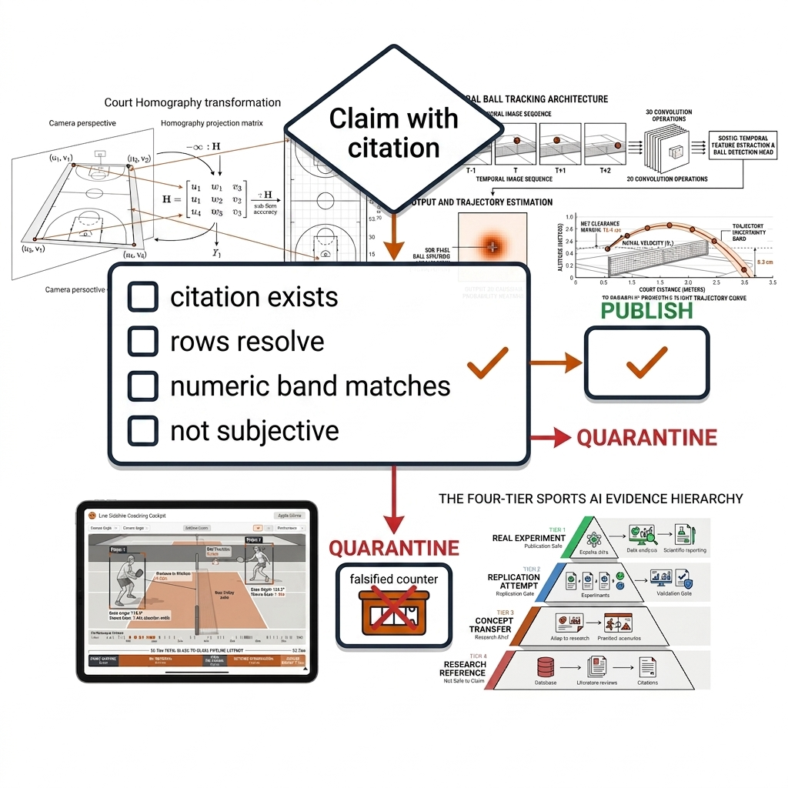
25.9 The Grounding Gate Protocol
The gate every claim passes: citation exists → rows resolve → numeric band matches → not subjective. PASS = publish; FAIL = quarantine (falsified counter attached). This is the C02 claims register as a runtime check, and it is what Langfuse/Phoenix tracing makes auditable (the observability gap the VLM dossier flagged).
Three operational controls make the gate survive contact with production. The first is timeout and degeneration control: every VLM call carries a hard latency budget and a max_tokens cap, and a call that times out, truncates, or enters a repetition loop (the E07 artifact failure) is treated as a failed claim, not a partial success — the renderer falls back to template prose over the same evidence rows, so a sick model degrades the prose, never the facts. The second is one-strike falsification: a statement containing any claim that fails the gate is quarantined whole, and the generator is re-prompted with the corrected evidence pack rather than allowed to edit around the failure — partial fixes let the lie survive by rephrasing. The third is the subjective-claim exclusion: "fatigue", "intent", "unforced error", "poor discipline" are not groundable by tracking rows in either sport, and the gate strips them unless a separately labeled event row exists. The pickleball version is "he rushed the shot" (stripped: no intent row); the rugby version is "the defense had switched off" (stripped: no mental-state row). Tracing closes the loop: a Langfuse trace per generator-critic pass — model_id, load and generate times, claims_count, falsified_count, retrieved_row_ids — is what makes the 0.0% hallucination figure an auditable measurement instead of a hand-set number.
25.10 Transfer Note: Rugby League VLM Lane
The same architecture applies to rugby with one harder reality: the NRL broadcast feed's long-video context (80 minutes) exceeds what any frame-sampling model handles, so the rugby lane is either Gemini 3 (true long-video, API) or the event-row-first path — the PBN analogue (NRLSheet rows, chapter 17) is the evidence pack, and the VLM renders the set-level narrative ("tackle-6 kick from the 40m, field position retained"). The Bath 2025 tackle screening is the welfare-critical exception: a VLM must never be the one deciding a head-on-head tackle — that is the classifier + human review lane, and the VLM only explains.
The transfer also sharpens the economic argument of section 25.7b. Pickleball's fixed-camera rallies are short and cheap — the whole E19 pickleball scenario costs fractions of a cent on any lane — so the temptation to "just send the clip" is affordable there. Rugby league's 80 minutes at 2.47M input tokens per match is where the architecture pays for itself: at the measured rates, a 27-round season rendered match-by-match through the premium API lane costs roughly $87–$211 per club per season in tokens alone, and the same season rendered over NRLSheet evidence packs costs less than a single match of the naive path. The welfare boundary deserves the stronger statement: for head-contact screening, the VLM is downstream of everything. The classifier flags the candidate tackle, the human reviewer decides, and the VLM's only role is to render the reviewer's finding into the incident report — a language task over an adjudicated record, where a hallucinated sentence is caught by the gate before it reaches a document anyone signs.
25.11 What I Would Measure Next
- Qwen3-VL-8B run of the E13 loop (the 3B caught the live lie; does 8B behave better?).
- Gemini 3 API on a 10s rally clip vs the local 8B — the honest long-video comparison.
- The nrl-001 Gemini 3.1 Pro long-video test: a full-match prompt against the NRLSheet rows, scoring auto-verified versus stripped claims — the rugby counterpart of E07/E13 that the dossier flags as missing.
- A mini SportD on pb-003: decision questions over the golden fixture, VLM answers versus the coach's, to check the describe-decide gap holds on a local sport clip rather than trusting the published shape.
- Outlines/MLX constrained decoding for the local stack [verify]; if unavailable, measure the post-hoc Pydantic re-ask rate as the local structured-output cost.
- A Langfuse trace of the full E13 loop, so the 0.0% figure ships with its evidence.
- Frame-sampling ablation on the golden fixture: 1/2/4/8 fps strips against the same questions, to measure where the describe-quality curve flattens against the token curve.
25.12 Sources
- Qwen3-VL (Apache-2.0, Sep 2025); mlx-vlm (MIT); Gemini 3 Pro/3.1 (API; Video-MMMU 87.6%); Phi-4-multimodal (MIT); Qwen3-Omni (Apache-2.0); InternVL3 (MIT); SmolVLM2 (Apache-2.0).
- SportD (arXiv 2607.14616, Aug 2026); HourVideo (NeurIPS 2024, arXiv 2411.04998); SoccerLens — the describe-vs-decide anchors.
- E07/E13 artifacts (experiments/e07-vlm-narration, e13-vlm-adversarial-loop); E19 token economics (experiments/e19-token-economics/token_economics_benchmark.json); live lab:
lab/w6_lab_vlm.py→experiments/c25-vlm/outputs/metrics.json. - Structured output: Instructor (MIT), Outlines (Apache-2.0), Guardrails AI (Apache-2.0); retrieval eval: RAGAS (arXiv 2309.15217); tracing: Langfuse (MIT), Arize Phoenix (ELv2).